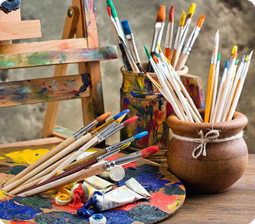
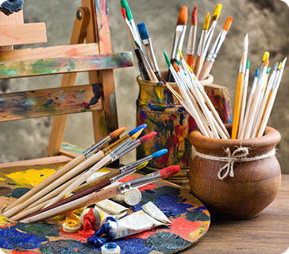
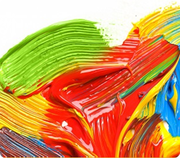
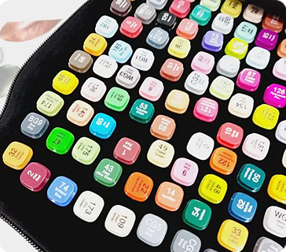
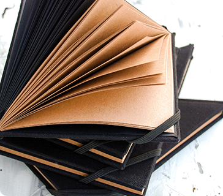

Пезлі
Пезлі бувають тонкі та широкі в ці два види входять середні малі, великі.
Олівці є прості грифельні та кольорового грифелю.
Олівець — це інструмент для писання, малювання чи креслення, писальна частина якого складається з глини із наповнювачем, покритої дерев'яною оболонкою. Існують також механічні олівці — у металевій чи пластиковій оболонці, споряджені висувальним механізмом.
Пезлі бувають тонкі та широкі в ці два види входять середні малі, великі.
Фарби прикрашають малюнки це набагато світліше ніж малювати олівцями.
Маркери схожі на текстовиділячі але маркери розмальовують.
Скетчбук для малювання дуже зручний у ньому плотніші сторінки та в ньому зручніше малювати.
